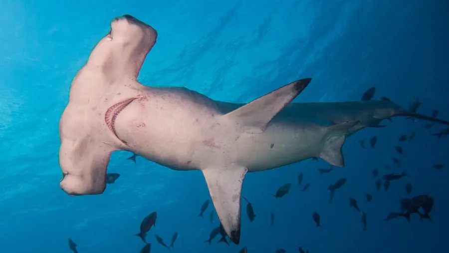

鱼类 · 动物界
路氏双髻鲨 Sphyrna lewini

头部向两侧延展成锤状的大型鲨鱼，双眼分列头翼两端，视野几乎覆盖全方位，常结成大群在暖海洄游。
- 分类
- 门脊索动物门纲软骨鱼纲目真鲨目科双髻鲨科属双髻鲨属
- 栖息环境
- 热带和暖温带沿岸、大陆架、岛礁与海底山附近
- 地理分布
- 全球热带和暖温带海域，中国东海、南海及台湾周边
- 保护级别
- IUCN 极危（CR）；中国保护级别暂无评估；CITES 附录Ⅱ物种
物种志
路氏双髻鲨的头部向左右两侧延展成宽阔的锤状，因此得名“锤头鲨”，两只眼睛和鼻孔分别位于头翼的末端，这种构造让它的双眼视野几乎没有死角，也有利于更精确地判断猎物位置。体呈纺锤形，背部灰褐色，腹部白色，背鳍高大，尾鳍上叶显著延长。成鱼体长一般 2.5–3.5 m，最大记录约 4.3 m，体重可达 150 kg。头翼表面密布电感受器，能探测埋在沙中的猎物发出的微弱电场。
路氏双髻鲨分布于全球热带和暖温带沿岸、大陆架和岛礁海域，中国东海、南海及台湾周边都有记录。它常结成数十至数百尾的群体，白天在海底山、海山或礁区附近集群，夜间分散捕食鱼类、乌贼和甲壳类，部分种群会进行季节性的南北洄游。繁殖为胎生，妊娠期约 9–10 个月，每胎 15–31 尾，幼鲨在近岸浅水育幼场成长。由于鱼翅贸易和渔业兼捕，全球种群在近几十年大幅减少，IUCN 已将其评为极危，其国际贸易受到 CITES 附录Ⅱ管制。
形态与习性
- 食性以鱼类、乌贼、章鱼和甲壳类为食
- 体长一般 2.5–3.5 m，最大记录约 4.3 m
- 体重成年个体约 80–150 kg
- 寿命约 30 年
- 繁殖胎生，妊娠期约 9–10 个月，每胎 15–31 尾
- 集群常结成数十至数百尾的群体，夜间分散觅食
趣味知识
- 双髻鲨的锤状头翼上布满电感受器，能探测沙下猎物发出的电场。
- 头翼把双眼分得越开，视野重叠区就越大，判断猎物的距离也越精准。
- 路氏双髻鲨的鱼翅在市场上价格很高，这是它被大量捕捞的主要原因。